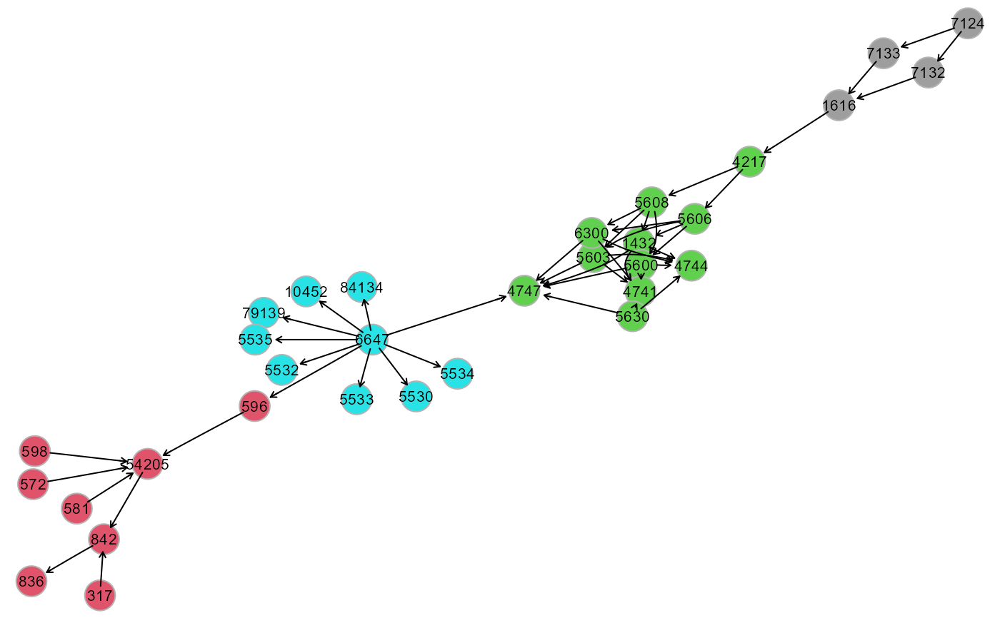
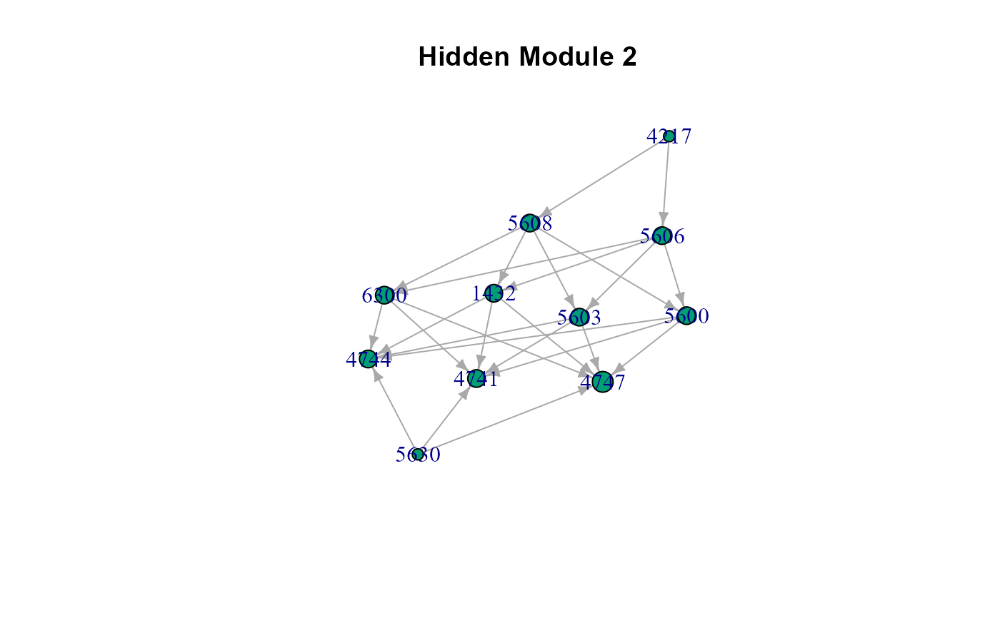
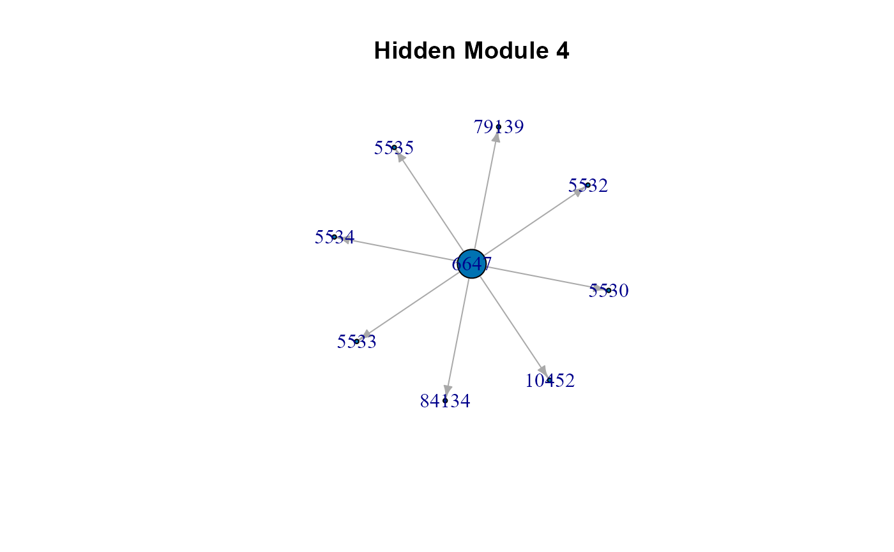
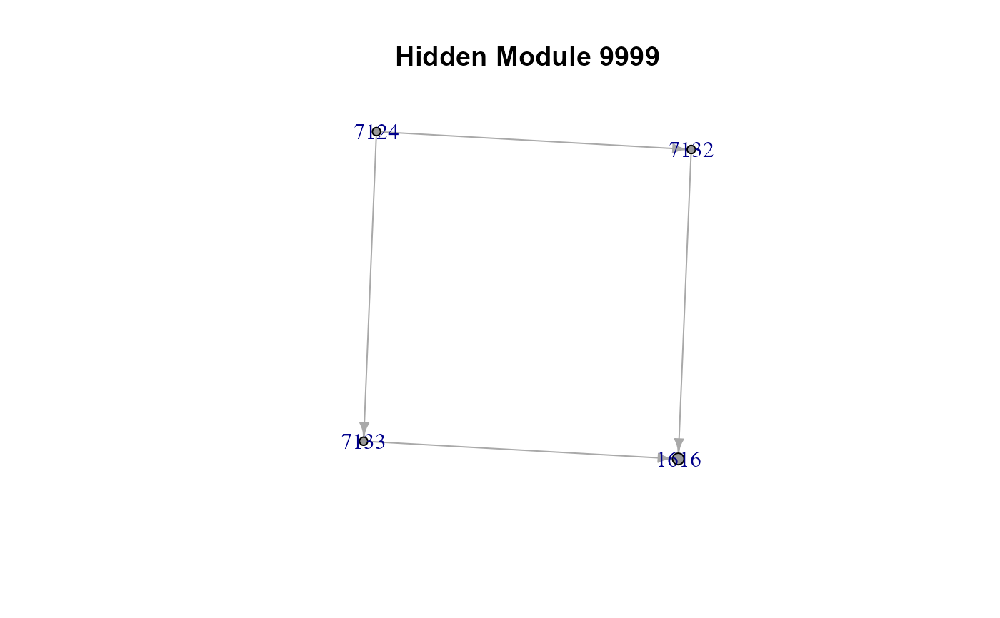

Map groups of nodes onto an input graph, based on a membership vector.
Arguments
- graph
An igraph object.
- membership
Cluster membership vector for each node.
- l
graph layout. One of the
igraphlayouts. If this argument is ignored, an automatic layout will be applied.- map
A logical value. Visualize cluster mapping over the input graph. If FALSE (default), visualization will be disabled. For large graphs, visualization may take long.
- verbose
A logical value. If FALSE (default), the processed graphs will not be plotted to screen, saving execution time (they will be returned in output anyway).
- ...
Currently ignored.
Author
Mario Grassi mario.grassi@unipv.it
Examples
# \donttest{
# Clustering ALS graph with WTC method
G <- alsData$graph
membership <- clusterGraph(graph = G, type = "wtc")
#> modularity = 0.5588502
#>
#> Community sizes
#> 3 1 4 2
#> 4 8 9 11
#>
cplot(G, membership, map = TRUE, verbose = FALSE)

cplot(G, membership, map = FALSE, verbose = TRUE)



# The list of cluster graphs !
cg <- cplot(G, membership); cg
#> $graph
#> IGRAPH 5d44052 DNW- 32 47 --
#> + attr: name (v/c), M (v/n), color (v/n), weight (e/n)
#> + edges from 5d44052 (vertex names):
#> [1] 6647 ->10452 6647 ->84134 6647 ->596 6647 ->4747 6647 ->79139
#> [6] 6647 ->5530 6647 ->5532 6647 ->5533 6647 ->5534 6647 ->5535
#> [11] 54205->842 7124 ->7132 7124 ->7133 581 ->54205 572 ->54205
#> [16] 596 ->54205 598 ->54205 317 ->842 842 ->836 7132 ->1616
#> [21] 7133 ->1616 1616 ->4217 4217 ->5606 4217 ->5608 5606 ->1432
#> [26] 5606 ->5600 5606 ->5603 5606 ->6300 5608 ->1432 5608 ->5600
#> [31] 5608 ->5603 5608 ->6300 1432 ->4747 1432 ->4741 1432 ->4744
#> [36] 5600 ->4747 5600 ->4741 5600 ->4744 5603 ->4747 5603 ->4741
#> + ... omitted several edges
#>
#> $HM1
#> IGRAPH c14319d DNW- 8 7 --
#> + attr: name (v/c), M (v/n), color (v/n), weight (e/n)
#> + edges from c14319d (vertex names):
#> [1] 54205->842 581 ->54205 572 ->54205 596 ->54205 598 ->54205
#> [6] 317 ->842 842 ->836
#>
#> $HM2
#> IGRAPH c14331a DNW- 11 25 --
#> + attr: name (v/c), M (v/n), color (v/n), weight (e/n)
#> + edges from c14331a (vertex names):
#> [1] 4217->5606 4217->5608 5606->1432 5606->5600 5606->5603 5606->6300
#> [7] 5608->1432 5608->5600 5608->5603 5608->6300 1432->4747 1432->4741
#> [13] 1432->4744 5600->4747 5600->4741 5600->4744 5603->4747 5603->4741
#> [19] 5603->4744 6300->4747 6300->4741 6300->4744 5630->4747 5630->4741
#> [25] 5630->4744
#>
#> $HM4
#> IGRAPH c143432 DNW- 9 8 --
#> + attr: name (v/c), M (v/n), color (v/n), weight (e/n)
#> + edges from c143432 (vertex names):
#> [1] 6647->10452 6647->84134 6647->79139 6647->5530 6647->5532 6647->5533
#> [7] 6647->5534 6647->5535
#>
#> $HM9999
#> IGRAPH c143636 DNW- 4 4 --
#> + attr: name (v/c), M (v/n), color (v/n), weight (e/n)
#> + edges from c143636 (vertex names):
#> [1] 7124->7132 7124->7133 7132->1616 7133->1616
#>
# }